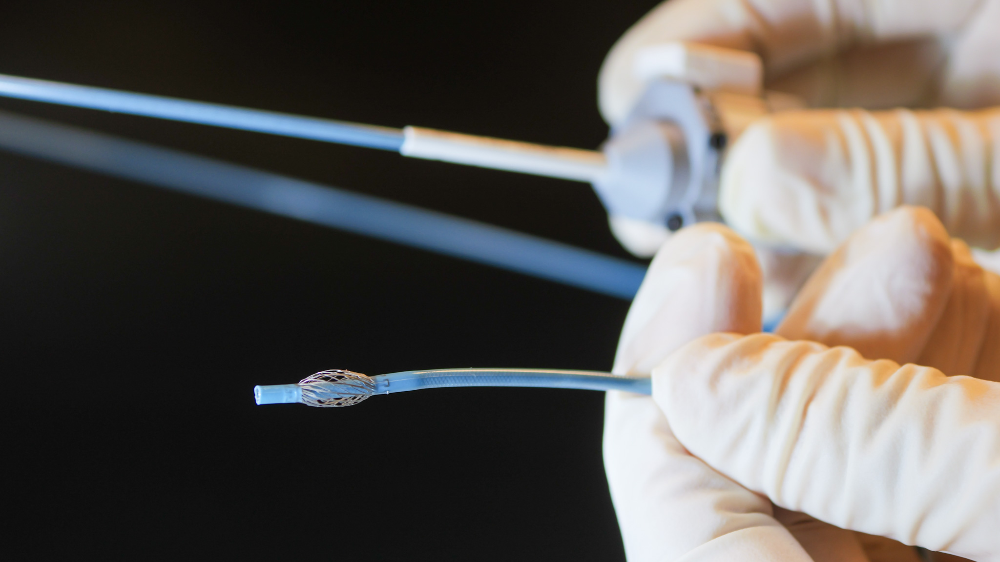
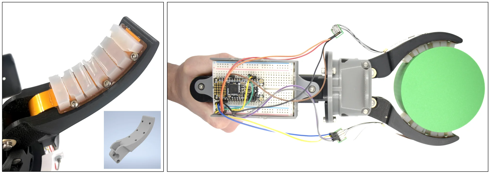
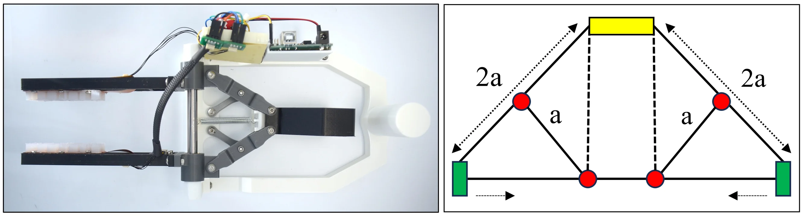
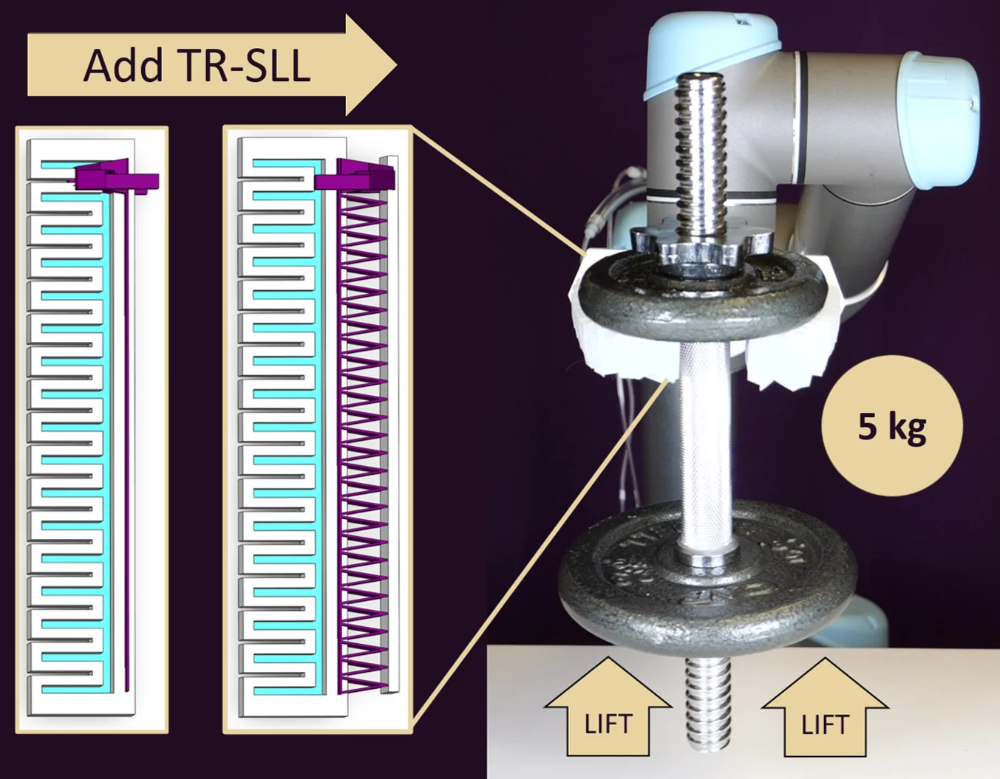

Research
Tip-transforming Guide Catheters based on Auxetic Metamaterials
Coronary intervention requires physicians to thread a catheter through blood vessels to reopen the artery. In complex cases, forces required to push devices past a blockage can drive catheters out of position and potentially cause damage to the artery wall or bleeding. HSAs proved to be effective in robotics due to their ability to expand radially when twisted, and their scale-independent behavior helps design catheters that can expand and anchor inside arteries to provide stable support during surgeries. I am studying how the HSA’s kinematics and geometry affect its performance and mechanical properties, especially for millimeter-scale medical devices. This will help us build optimal designs for safe and effective endo- and neurovascular therapies. In the future, this can provide controlled and autonomous anchoring.
Read more – Metamaterials meet Medicine.
This work is supported by the National Institutes of Health (NIH), the Washington Research Foundation (WRF), and the National Science Foundation.

Flexible Sensor-Integrated End Effector for Underwater Manipulation
Underwater manipulation is challenging due to low visibility and turbulent conditions at depth, and mere visual feedback is insufficient to assess grasp stability. Tactile sensors provide real-time contact pressure across the finger during subsea manipulation, and can also be used to train slip detection classifiers to assist ROV operators. I built a prototype based on Reach Bravo’s end effector to integrate flexible tactile sensors. We also developed a data collection procedure to perform slip characterization, simulating grasp conditions that occur during underwater grasping. Additionally, I programmed a PyVista-based visualizer that provides feedback on finger position, tracking its real-time state using a time-of-flight sensor.
Read: IEEE Xplore
This work was supported by the Office of Naval Research (ONR), U.S. Department of Defense.

Handed Shearing Auxetics (HSA) and High Grip Strength Soft Grippers
Soft robots are ideal for delicate manipulation and safe human-robot interaction, but their lack of rigid structures limits real-world adoption. We developed a torsionally-rigid strain limiting layer and integrated it into handed shearing auxetics (HSA) to fabricate a soft gripper. I utilized finite element analysis to conduct a parametric design study and determine the optimal TR-SLL configuration. This structure minimizes out-of-plane bending while preserving the gripper’s in-plane compliance and flexibility. The soft HSA gripper was able to lift a payload of over 1 kg (pinch grasp), and 5 kg when loaded through the TR-SLL element. It reached a peak pinch force of 5.8 N, and a peak planar caging force of 14.5 N, a significant capacity when lifting objects perpendicular to gravity. The gripper achieved a success rate of 86% when tested with 43 YCB objects.
Read: IEEE Xplore • arXiv preprint
This work was supported by the National Science Foundation, the Murdock Charitable Trust, and the Office of Naval Research (ONR).
Benchmarking robot grasping and manipulation
Electrically-Driven Soft Arms based on Mechanical Metamaterials
Expanding the work on HSA grippers, we designed and built an electrically-driven soft robot arm with auxetic metamaterials, including bendable, extendable, and torsionally-rigid flex shafts. This arm does not require a hanging configuration to lift significant payloads. It can be mounted horizontally or vertically, and can perform tasks such as pipe inspection and underwater docking with a high degree of compliance. The HSA arm lifted a 600 g mustard bottle while supporting its own weight, and up to 2.3 kg vertically.
Read: arXiv preprint
This work was supported by the Murdock Charitable Trust and the Office of Naval Research (ONR).
Sensing-Capable Parallel Jaw Gripper for Learning Soft Fruit Harvesting
Harvesting soft fruits like blackberries requires precise grasp control — too much force damages the fruit, too little causes it to slip. To study this, I built a sensorized parallel-jaw gripper integrated with tactile sensors, designed to work with a blackberry proxy that is designed to simulate real fruit properties and variations. This low-cost, mechanically-operated gripper allows human-controlled data collection, replicating soft fruit grasping conditions to train robots on detecting berry maturity and applying the correct grasp pressure. Unlike conventional parallel-jaw grippers that rely on two independent motors and linear rails, this design uses a mirrored Scott-Russell linkage driven by a single linear actuator. The mechanism used here lays the foundation to build an economical automated environment for training, though this remains an open direction for future work.
Read: IEEE Xplore
This work was supported by the National Science Foundation (NSF).

Enhanced Pneumatic Network Actuators (Pneu-Net)
This work introduced 3D-printed torsion-resistant strain limiting layers, which were then integrated into HSA grippers (read above). Despite being the primary form of soft grippers, a key limitation to their wider adoption is their inability to grasp significant payloads due to objects slipping out of grasps. They’re primarily made up of silicone elastomers and lack a rigid skeleton to counteract twisting forces. We overcame this limitation by introducing a torsionally-rigid strain limiting layer. TR-SLL reduced out-of-plane deformations by up to 97% compared to a benchmark Pneu-Net actuator from the Soft Robotics Toolkit.
Read: IEEE Xplore • arXiv preprint
This work was supported by the National Science Foundation (NSF), the Murdock Charitable Trust, and the Office of Naval Research (ONR).
